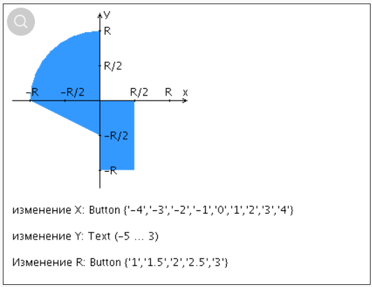

|
Разработанная HTML-страница должна удовлетворять следующим требованиям:
- Для расположения текстовых и графических элементов необходимо использовать табличную верстку.
- Данные формы должны передаваться на обработку посредством GET-запроса.
- Таблицы стилей должны располагаться в отдельных файлах.
- При работе с CSS должно быть продемонстрировано использование селекторов идентификаторов, селекторов псевдоклассов, селекторов классов, селекторов потомств а также такие свойства стилей CSS, как наследование и каскадирование.
- HTML-страница должна иметь "шапку", содержащую ФИО студента, номер группы и новер варианта. При оформлении шапки необходимо явным образом задать шрифт (serif), его цвет и размер в каскадной таблице стилей.
- Отступы элементов ввода должны задаваться в пикселях.
- Страница должна содержать сценарий на языке JavaScript, осуществляющий валидацию значений, вводимых пользователем в поля формы. Любые некорректные значения (например, буквы в координатах точки или отрицательный радиус) должны блокироваться.

|